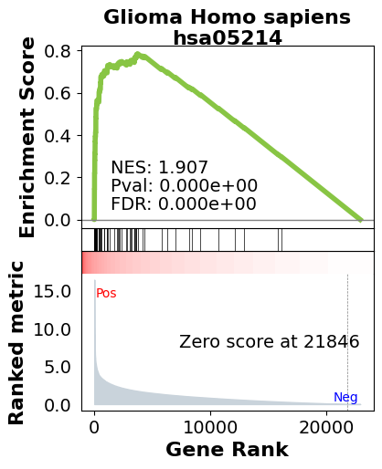

← Back to projects
Pathways · GSEApy · Reproducibility
GSEApy Wrapper
Reproducible preranked gene set enrichment analysis across human and mouse collections.

Overview
A Python wrapper around GSEApy’s preranked GSEA method, built for reproducible gene set enrichment analysis with FDR-controlled scoring. The library exposes a single primary function, run_gseapy_prerank_multiple_term_collections(), that accepts ranked gene lists and runs GSEA simultaneously against multiple GMT collections in one call.
Tech stack
- Python 3.11 and GSEApy 1.1.11.
- NumPy, SciPy, Pandas, Scikit-learn, AnnData, Matplotlib, and Seaborn.
- Conda environment management with curated config files.
Key features
- Multi-collection GSEA against Enrichr and MSigDB libraries in a single function call.
- Reproducible permutation-based FDR scoring across runs.
- Human and mouse gene list support with precomputed ortholog conversion tables.
- Curated GMT collections organized by species, including ortholog-converted versions.
- Modular wrapper, visualization, and post-processing helper modules.
Repository structure
run_GSEApy_wrapper/
├── _gseapy_pre_rank_wrap.py
├── _gseapy_dot_plots.py
├── _gseapy_post_process_helpers.py
├── config/
├── data/ref/
└── examples/GSE68719/Example usage
from _gseapy_pre_rank_wrap import run_gseapy_prerank_multiple_term_collections
run_gseapy_prerank_multiple_term_collections(
data_csv_path="examples/GSE68719/data/ranked_genes.csv",
list_of_term_collections=["h.all.v2023.2.Hs.symbols", "c2.cp.kegg"],
rank_metric_calc_flavor="signal_to_noise",
outdir="examples/GSE68719/results/"
)